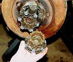
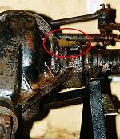
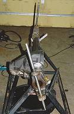
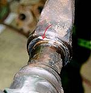
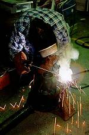
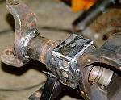
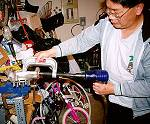
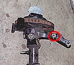
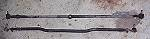
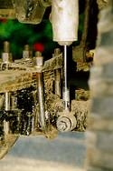

The complex part of axle swaps is the front axle. The front axle is much more complex than the rear axle because of caster, spring perch placement, and steering linkage among other things. The front Scout II Dana 44 is a good fit for a Wrangler YJ though. The work involved is not as hard as it is time consuming. Doing a spring over axle conversion (SOA) at the same time adds to complexity, but it is the time to do it, if you are going to do it.
 I started by completely disassembling the front end. The diff fluid was very muddy and contained water. I decided to have all new bearings and seals installed. I wasn't too disappointed since I only spent $65 on the axles.
 Before I did installed new bearings and seals, I first had to address the issue of converting the housing into a spring-over axle configuration. Because the diff housing is so far to the side, the only reasonable way to do this was to grind a spring perch into the top side of the differential housing. The material to remove is circled in red in the picture to the left. While I was at it, Rob convinced me to angle this new perch so that the pinion pointed towards the xfer case output. This provided extra ground clearance under the pinion yoke and allowed me to use a CV shaft. Grinding this perch into the housing was surprisingly easy.
The Scout axle has zero degrees of caster. Tilting the pinion upwards will result in negative caster. SOA conversions generally require five degrees or more of caster. It is for that reason that I had to adjust the axle yokes' caster. This was an excruciatingly difficult process.
 I had to carefully grind away the welds which secured the yokes to the axle tubes and then pound on the yokes with a heavy hammer. After a lot of grinding and pounding, I finally got them moved to a decent angle. In the picture to the left, the foreground is the yoke which has been set to the new caster angle and the background is the original caster. Big difference, eh? One thing to be aware of is that if you set them for too much caster, the steering arms may be tilted up so much that the drag link & tie rod will collide with the spring packs (applies only to SOA setups).
 When adjusting the yoke caster angles, I used an angle grinder with a thin wheel to grind away the weld securing the yoke to the axle tube. In the picture to the right you can see the rust-coloured line which is the seam between the tube & yoke (indicated by a red arrow). If this line goes right around the tube, you can begin hammering the yoke to adjust its caster
Once the yokes were positioned just right, I had a professional welder, John Edgar, weld the yokes in place using special rod which would work with the cast metal in the yokes and the mild steel of the tubes.
 I used a half-inch thick piece of plate to serve as the spring perch on top of the housing. I added four small gussets and then had John Edgar weld this spring perch to the cast iron housing. For the driver's side perch, I made one from square tubing and welded it on myself.
When I bolted the D44 in place I saw how little clearance there was between the drag link and the leafs when the axle was at full droop. Basically, the angle was so steep that the drag link would hit against the passenger-side leaf spring. I solved this by welding 1/2" tall pads on top of each perch. This gave me the clearance I needed and I suspect this is one of the reasons why I didn't have this clearance problem when I did the Rubicon Express SOA with my stock axles: the "anti-wrap" perch plates they used provided that 1/2" of clearance.
 Replacing the ball joints is extremely easy, if you have the right tools. Thanks to Ed Mah, I had the right tools. Using his ball joint installer/remover tool, we had them changed in less than ten minutes
I handed all the pieces plus new bearings, seals, etc to Grant Klavatalks who re-assembled the front end and ensured that the ring & pinion gears were correctly setup.
I swapped the stock diff cover for one from a Ford reverse rotation D44. These covers are designed to be used on the front diffs so they are flattened in front for added tie rod clearance, they're approx 1/8" thick for rock protection, and the fill hole is higher up which is useful if your pinion is tilted high.
Modifications were needed to use the YJ tie rod and drag link with the Scout II axle. The Scout II uses a much longer steering arm on the knuckle and using the stock locations will severely limit turning radius. These holes are tapered so that the tie rod fits snug with no play, so a special tapered bit must be used to ream the holes.
 I had new holes drilled and reamed in the steering arms of the knuckle. This was done so that I could mount my YJ tie rod six inches from the center of the ball joints to allow me to use the existing pitman arm without reducing my turning radius by very much. The new hole I had drilled for the YJ tie rod is circled in red in the picture to the right.
 With the new tie rod holes I had drilled into the steering arms, I was able to use my stock YJ tie rod but I had to get it shortened by 3 inches. I could've had a thicker one built but that would have reduced my turning radius because there is very little clearance between the tie rod and the front of the diff cover. I was able to re-use the stock drag link after I screwed the tie rod ends further into the link, there by reducing its overall length.
I also bought some 1976 Ford F150 4x4 front calipers rather than rebuilding the ones which were on the axle. I used Ford parts because they fit in the axles but used a smaller brake line fitting which was identical to the size already used on my YJ.
 For shock mounts, I welded some simple studs onto the back of the housing so that they were perpendicular to the tube. I welded them directly to the tube because I wanted to eliminate all the annoying hardware that hung below the axles. I was planning on raising the upper shock mounts once I got my Jeep back on the road.
Turning radius is almost as good as before. There's just enough clearance for the drag link under the spring pack. Bump steer isn't too bad and nothing hangs below the axle housing.
{kind=link}
{kind=link}
{kind=link}
{kind=link}
{kind=link}
{kind=link}
{kind=link}
{kind=link}
{kind=link}